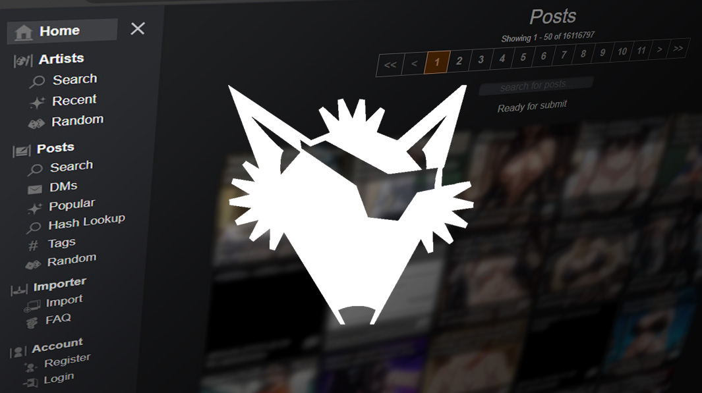

Kemono: Your Ultimate Guide to Meaning and Trends
Kemono may seem like a simple term at first glance, but it carries layers of cultural depth, vibrant online communities, and evolving trends that everyone—from language lovers to digital explorers—will find fascinating. In this guide, we’ll journey through its origins, navigate popular kemono websites, uncover trending content, and share expert insights to keep you in the loop.

What Does Kemono Mean in Japanese?
When you search for “kemono meaning” or “kemono in Japanese,” you’re tapping into a word that literally translates to “beast” or “wild animal.”
- Literal definition: Kemono (獣) refers to non-human beasts—think wolves, tigers, or fantastical creatures.
- Figurative use: In anime and manga contexts, kemono characters blend human and animal traits, much like “anthropomorphic animals.”
- Furry fandom overlap: Western audiences sometimes use “kemono” interchangeably with “furry,” though purists note distinct cultural roots.
“In Japan, kemono art is more than cute characters; it’s a celebration of nature’s raw spirit.”
Dr. Aiko Nakamura, Cultural Anthropologist at Kyoto University
Origins and Cultural Significance of Kemono
Long before it graced modern screens, kemono featured prominently in Shintō and folk tales, where animals like foxes (kitsune) and tanuki (raccoon dogs) played trickster roles. Over centuries, these stories:
Personified nature’s power through animal spirits.
Taught moral lessons—the fox’s cunning, the raccoon’s generosity.
Inspired artistic styles in scroll paintings and woodblock prints.
“Kemono embodies the intersection of art and nature in Japanese culture.”
Professor Emi Watanabe, Folklore Expert
Navigating Kemono Websites and Online Communities
With the rise of digital platforms, “kemono website” searches often lead fans to hubs where they can view, download, or share art and comics. Popular queries include kemono log in, kemono new website, and what happened to kemono su.
| Platform | Domain | Status | Key Features |
|---|---|---|---|
| Kemono.party | kemono.party | Limited access | Vast archive; occasional blocks |
| Kemono.su | kemono.su | Intermittent | Mirror site; up-to-date posts |
| Kemono.website | kemono.website | Active | Curated content; user profiles |
| FurryNetwork | furynetwork.com | Steady uptime | Community forums; art streams |
How to Access and Secure Your Kemono Account
Having stable access and protecting your data is key. Follow these steps:
Visit the official domain: Always start at kemono.website or an artist’s official link.
Create/login safely: Use unique passwords; enable two-factor authentication when available.
Verify SSL certificates: Look for the padlock icon in your browser’s address bar.
Backup your favorites: Regularly export your saved artwork links in case of downtime.
Stay updated: Join Discord or Telegram channels for real-time site status alerts.
“If you encounter a ‘403 Forbidden’ error on kemono.su, it’s likely due to regional blocking—use a trusted VPN.”
Kemono Content Trends: What’s Hot in 2025?
- Eco-themes: Artists illustrating kemono as endangered species to raise awareness.
- Hybrid fashions: Cyberpunk-meets-forest-creature designs mixing neon and fur.
- Interactive comics: Scroll-based webtoons featuring clickable sound effects.
- Voice-narrated art: Short audio clips bringing kemono characters to life.
Seasonal Trends and Search Patterns for Kemono
| Season | Peak Searches | Popular Themes |
|---|---|---|
| Spring | kemono cherry blossom | Floral-patterned kemono |
| Summer | kemono convention lore | Festival outfits |
| Autumn | kemono folklore tales | Spirit-hunter narratives |
| Winter | kemono winter attire | Cozy, scarf-wearing art |
Expert Insights on the Future of Kemono
“The next wave will blend AR experiences with kemono art, letting fans ‘step inside’ their favorite beasts.”
Dr. Ryuji Tanaka, Digital Media Researcher
“Community-driven storytelling—where fans co-author kemono myths—will redefine our understanding of these characters.”
Professor Miho Sasaki, Interactive Narratives Specialist
Conclusion
From its ancient roots to cutting-edge web platforms, kemono offers a rich tapestry of art, culture, and community. Whether you’re exploring its Japanese meaning, hunting down the best kemono website, or creating your own anthropomorphic masterpiece, there’s never been a more exciting time to dive in. Ready to join the herd? Explore kemono today and share your favorite discoveries!
FAQ
What does kemono mean in Japanese?
Kemono literally means “beast” or “wild animal.” In modern usage, it often refers to stylized, anthropomorphic creatures in anime, manga, and art.
How do I log in to the kemono website?
Go to kemono.website, click Log In, enter your credentials, and enable two-factor authentication for extra security.
What happened to kemono.su?
Kemono.su often faces regional blocking and maintenance. If it’s down, try the mirror at kemono.party or use a VPN to regain access.
Are kemono and furry the same?
They overlap but differ culturally: kemono stems from Japanese folklore and art traditions, while “furry” originates in Western fandom.
Which seasons see peak kemono searches?
Spring (cherry blossom art) and autumn (folklore themes) typically have the highest kemono-related search volume.
Can I request custom kemono art?
Yes! Many artists on kemono.party and FurryNetwork take commissions—check their profile pages for pricing and guidelines.
How can I stay updated on kemono trends?
Join dedicated Discord servers, follow trending hashtags like #KemonoArt2025, and subscribe to newsletters from leading kemono platforms.